СОВРЕМЕННЫЙ ДИЗАЙН КОТТЕДЖА С ЯРКИМИ АКЦЕНТАМИ
О проекте
О проекте
Интерьер этого коттеджа площадью 130 м2 разработан для молодой семьи из трех человек.
Главной задачей было создание уютного, светлого интерьера, вписав в него яркие цветовые пятна, что является смелым решением и передает характер хозяев, которые были готовы эксперементировать со своим жилищем.
В каждом отдельном помещении использовался свой акцентный цвет, делающий интерьер индивидуальным, но при этом комфортным для жизни.
Визуализации интерьеров
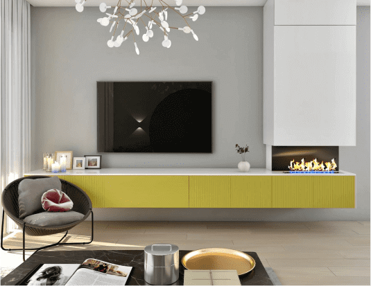
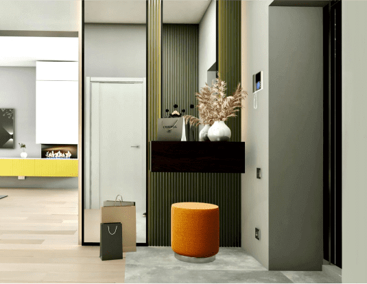
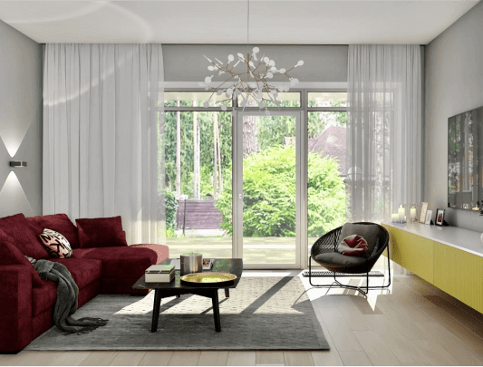
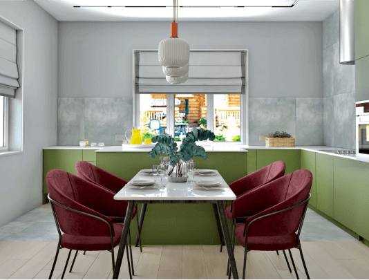
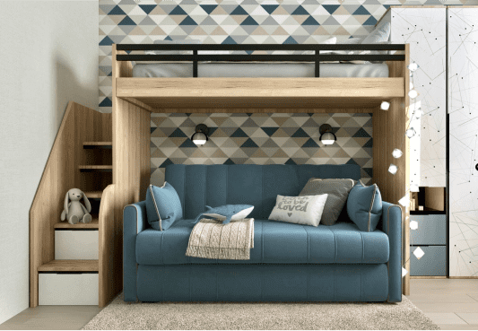
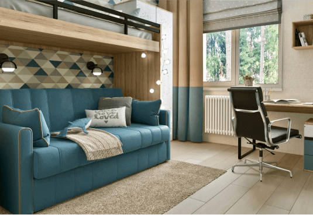
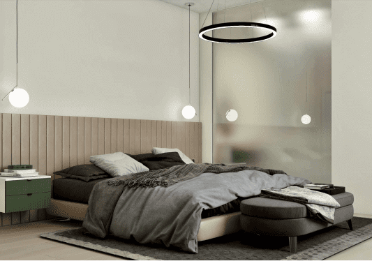
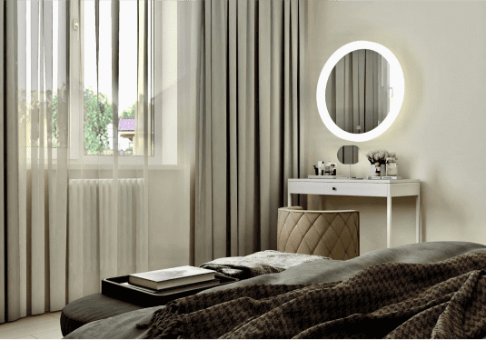
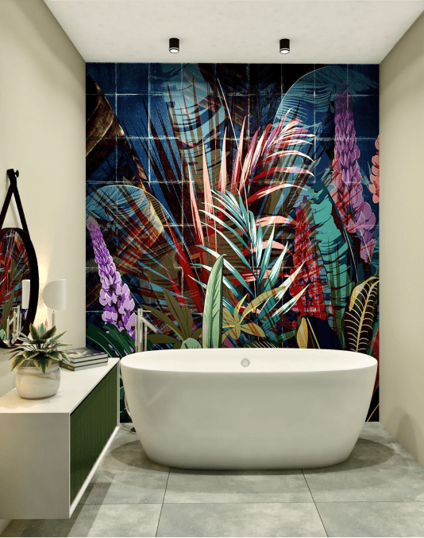
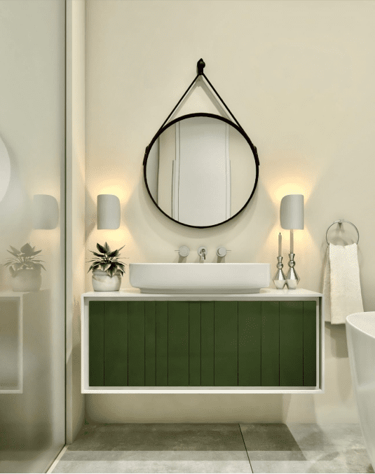
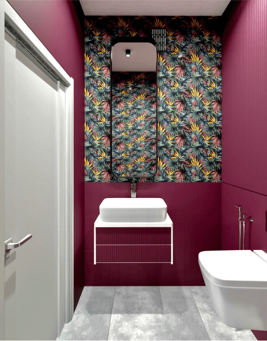
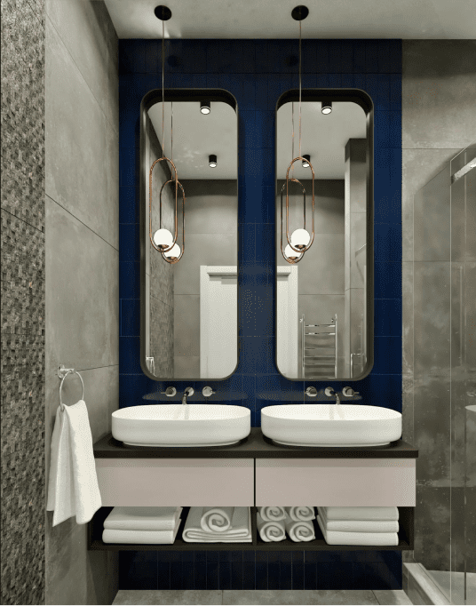